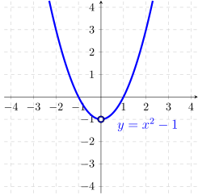
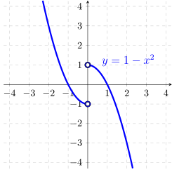

Define
\(f(x) = \left \{ \begin {array}{cl} x^2-1 & \qquad \text {if } x < 0 \\ \text {? } & \qquad \text {if } x > 0 \\ \end {array} \right . \)
(a)
Find an expression for ""such that
\(f\)
will be even.
If
\(f\)
is even then
\(f(x)=f(-x)\)
.
\begin{align*} f(x)&=f(-x)\ \text {for}\ x>0\\ &=(-x)^2-1\\ &=x^2-1 \end{align*}

(b)
Find an expression for ""such that
\(f\)
will be odd.
If
\(f\)
is odd then
\(f(-x)=-f(x)\)
.
\begin{align*} -f(x)&=f(-x)\ \text {for}\ x>0\\ &=(-x)^2-1\\ &=x^2-1\\ & \implies f(x)=-x^2+1 \end{align*}
